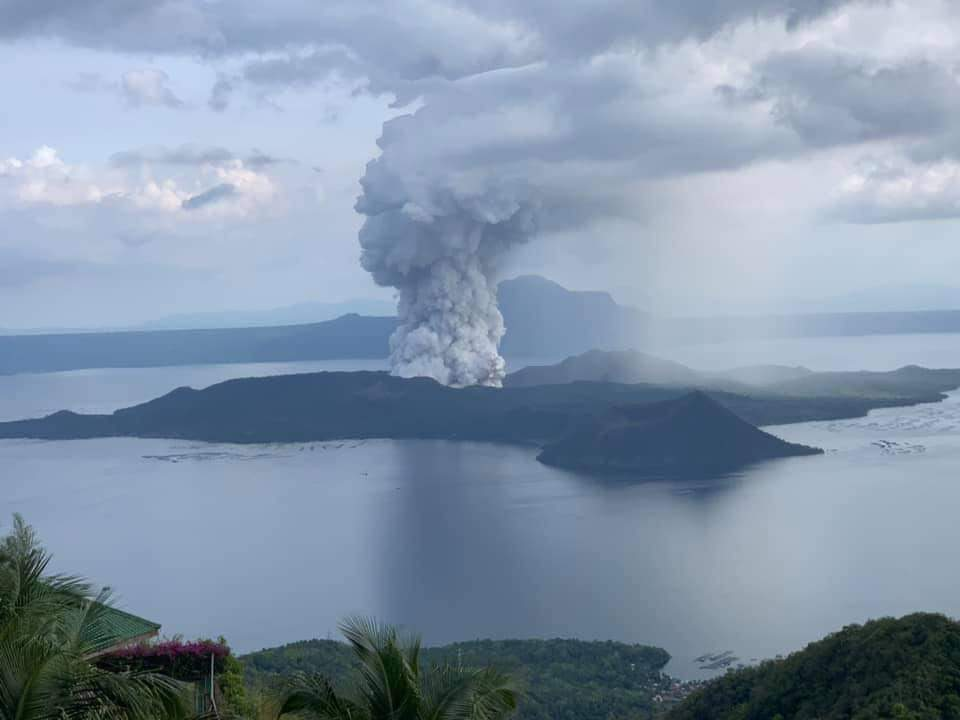
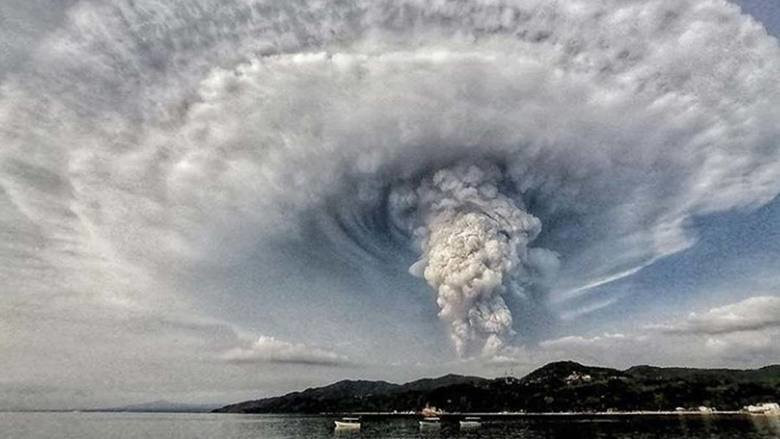

On Tuesday, the World Health Organization (WHO) declared an official name for the new coronavirus disease: COVID-19 — making sure not to reference Wuhan, the central Chinese city where the virus originated. COVID-19 stands for Corona Virus Disease 19.
Solicitor General Jose Calida’s upcoming quo warranto case vs. broadcast giant ABS-CBN would be seen as “government’s harassment” and “a clear assault on press freedom,” Cagayan de Oro Rep. Rufus Rodriguez said.Rodriguez made the remarks as Calida is reportedly set to question before the Supreme Court (SC) anytime the supposed handover of the Kapamilya network to the Lopezes during the Aquino administration in 1986, which he believed was void from the beginning. According to Rodriguez, it will not be only seen “as government’s harassment of ABS-CBN,” but also a “clear assault on press freedom as enshrined in our Constitution.”
yes
yes
As of Saturday, January 25, the NDRRMC and the PHIVOLCS have reported a total of 950 volcano tectonic earthquakes in the Taal area since the eruption, 176 of which were felt. The strongest were a series of Mw 4.1 magnitude earthquakes originating 6 kilometres northwest of Agoncillo, Batangas, which were recorded at least thrice: at 11:56 pm on January 12, 3:11 am on January 13, and 6:35 am later that day. As a result, an Intensity III on the PHIVOLCS Earthquake Intensity Scale was felt in Tagaytay and an Intensity II was felt in Malabon. Between 11:39 pm on January 13 and 5:50 am the following day, PHIVOLCS reported a total of 44 earthquakes in the towns of Calaca, Laurel, Lemery, Mataasnakahoy, San Luis, Taal and Talisay in Batangas, and Alfonso in Cavite; among the strongest were a magnitude Mw 3.6 in Taal, which was felt at an Intensity III in Tagaytay, and a magnitude Mw 3.9 originating 7 kilometres northeast of Talisay at 2:05 am, measuring an Intensity IV in Tagaytay and Intensity II in Malabon and Pasay. As a result of these constant earthquakes, numerous fissures or cracks began to appear across different barangays in the Batangas towns of Agoncillo, Lemery, San Nicolas, and Talisay, the towns within the 14-kilometer radius danger zone of Taal. A fissure also transected the road connecting Agoncillo to Laurel. On Wednesday, January 15, PHIVOLCS reported that the water in the main crater lake on Taal Volcano Island has drained; the lake measured 1.9 kilometers wide and 4 metres (13 ft) above sea level. Portions of the Pansipit River, had also drained as a result of "the ground deformation caused by an upward movement of the magma" It is the same process that caused the series of earthquakes. PHIVOLCS have also hinted on underwater fissures in Taal Lake where the water may have drained into. By January 27 from 5 am until January 28, only 3 volcanic earthquakes were recorded with magnitudes 1.5 to 2.2, with no felt event. As recorded by the United States Geological Survey, 92 earthquakes were detected in the past 24 hours. Four of them are low frequency events, which are "caused by cracks resonating as magma and gases move toward the surface". PHIVOLCS also noted the low frequency events and they recorded 170 volcanic earthquakes in its 8 am bulletin.